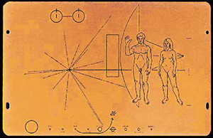

NASA's wet dream
On the morning of the 28th of September, 2015, I was sitting at my desk working on this very thesis, when I reveived a message from a friend, telling me that NASA National Aeronautics and Space Administration was to announce something big that evening. My mind immediately jumped to the conclusion that they must have found evidence of extraterrestrial lifeforms. Which would have been great, seeing as it would make writing this thesis even more relevant. Unfortunately, they didn't. What they had found was proof of liquid water on the surface of Mars, which is less exciting as the discovery of otherworldy beings, but for NASA and humankinds future space endeavors, still a big deal.
National Aeronautics and Space Administration was to announce something big that evening. My mind immediately jumped to the conclusion that they must have found evidence of extraterrestrial lifeforms. Which would have been great, seeing as it would make writing this thesis even more relevant. Unfortunately, they didn't. What they had found was proof of liquid water on the surface of Mars, which is less exciting as the discovery of otherworldy beings, but for NASA and humankinds future space endeavors, still a big deal.
A couple of decades earlier, in 1972 and 1973, NASA launched two probes into outerspace called the Pioneer 10 and Pioneer 11 spacecrafts. Both of them had a golden plaque on board engraved with illustrations of the physique of a human male and female. With additional symbols explaining the origin of the spacecraft. These plaques where intented for the event if any form of extraterrestrial life where to intercept the crafts; to communicate with 'them'. Some years later, in 1977, NASA launched the Voyager spacecrafts. On board they included golden phonograph records containing a selection of sounds and images The 126 images included on the record selected to portray our way of living on earth. The launching of these spacecraft could be compared to throwing a bottle with a message in the ocean, except that the ocean in this case is the almost infinite vastness of space and the bottle is a highly sophisticated piece of technology.
The 126 images included on the record selected to portray our way of living on earth. The launching of these spacecraft could be compared to throwing a bottle with a message in the ocean, except that the ocean in this case is the almost infinite vastness of space and the bottle is a highly sophisticated piece of technology.
It all might sound like science-fiction; entertainment for star-gazers and conspiracy-theorists. But isn't it more than just that? In history, science-fiction has been used as a device to predict the future and to hypothesize about the direction we as human-kind are going into. Using our imagination it has taken us beyond the limits that science has given us in the past. It is used to reflect upon our society, to give social, economical and ecological commentary, and to explore the immensity of the universe, and the part that we play in it. Science-fiction and modern science have made us aware of how absurdly small our planet is amongst the billions of stars, and how uniquely populated it is. Besides, many subjects that science-fiction has dealt with that seemed ridiculous at the time, were an inspiration for modern science and have become part of our daily life. Think about men walking on the moon, probes sent into interstellar space (1) (the same one that is carrying a message for ET-lifeforms) and commercial space-travel (2).
There is, however, still one subject that has eluded the transition from science-fiction to science and is still solely a product of fiction. And that is the subject of extraterrestrial life. The age old question that deals with whether we are alone or not. With the limitation of science in earlier centuries there wasn't much contemplation towards the idea of extraterrestrial life, as our knowledge of the universe was limited, and we were still focused on figuring out things on our own planet. In the last century though, science has given us better and more powerful tools to observe and explore the universe we live in, and the possibilty of the existence of extraterrestrial life has become a more likely scenario. It is the opinion (and maybe dream) of many scientists (and myself) that it will only be a matter of time until we find proof of extraterrestrial life- forms. "I think we'll find E.T. within two dozen years using these sorts of experiments," Seth Shostak, Senior Astronomer and Director, SETI, during a talk at the 2014 NASA Innovative Advanced Concepts And when we finally do make contact, it will be an entirely new question on how we are going to communicate with one another. As of yet, there has been no hard evidence on the existence of extraterrestrial life, but it might not be such a bad idea to think ahead of the many possibilities that this kind of discovery will bring with itself. Therefore my research question is as follows: In the hypothetical case of contact with an extraterrestrial life-form, what will the design of such a way of communication look like?
To make on thing clear though, this thesis is not about the possibility of making contact with an extraterrestrial life-form, it is about the hypothetical case in which we actually do make contact and in what way we can make this contact successful. For that matter, I will be taking a closer look into the actual attempts that have already been made to make contact, the attempts of fiction to describe such contact and the way communication studies here on earth can help in designing a valid(?) form of communication. You see, the thing that all these ways of communicating have in common, is that they are all designed to communicate. They have been designed for a specific purpose. They are the products of thought-processes from scientists and artists to try to figure out in what way we will communicate with an extraterrestrial life-form.